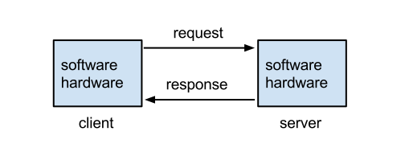

Engineering · Applied AI · Evaluation
Scoring an AI assistant before it ships
An assistant that recommends actions to administrators, such as which setting to change, which policy to tighten, or which integration to disable, has a different risk profile from a chatbot that answers trivia. A wrong answer is not just unhelpful. If the user acts on it, they pay for it in a change they did not mean to make, a feature they locked themselves out of, or time spent undoing the damage. The engineering problem is putting a check in front of that moment.
This article describes how to build that check: an evaluation harness that scores an assistant’s output before it reaches real accounts, runs in CI like any other test, and fails on purpose when something regresses. The examples use an admin-style assistant, but the approach applies to any agentic or recommendation-producing system.
1. Why a demo is not a release criterion
A demo shows the model at its best on inputs chosen by the person demonstrating. Production shows the model on inputs nobody anticipated, in accounts with unusual configurations, asked by users who phrase things in ways you would not. The gap between those two is where incidents live.
A useful way to think about it: a demo answers “can the model do this?”, and an evaluation answers “how often does the system do this correctly, and what does it do when it is wrong?” Release decisions need the second answer, and they need it as a number you can compare between versions.

2. Start with failure modes, not features
Before writing any cases, list the ways the assistant can be wrong. For a recommendation assistant, the list is usually short and specific:
- Hallucinated capability. It recommends a setting, plan feature, or API that does not exist, or exists only on a higher tier.
- Out-of-scope action. It recommends something the account’s role or plan does not permit.
- Unsafe sequencing. It skips a prerequisite or suggests steps in an order that locks the user out, for example disabling an authentication method before enabling its replacement.
- Confident but stale. It states a policy or default that changed after the model’s training data was collected.
- Over-eager. It recommends a change when the right answer is “nothing needs to change” or “ask an owner.”
- Leakage. It exposes information about another account or an internal detail it should not repeat.
Notice that fluency appears nowhere on that list. Fluency is cheap; modern models are fluent when they are wrong. The dangerous failure is the confident, well-written, incorrect answer, which looks fine in a screenshot and fails in an account.
3. Cases and rubrics
An evaluation case is an input plus a definition of what acceptable behavior means. A good case has four parts:
- Input: the user’s message, plus the context the assistant would receive in production (account plan, enabled features, relevant configuration).
- Fixture: a frozen snapshot of the account state the assistant may consult, so the case is reproducible.
- Checks: assertions about the output, from strictest to loosest.
- Tags: which failure mode the case probes, so a regression report can say “hallucinated capability: 3 of 40 failing” instead of “score dropped.”
Build the set from three sources. Golden cases are the common questions you expect most users to ask; they establish a baseline. Adversarial cases are written to provoke each failure mode on the list above: ask about a feature that does not exist, ask for something the plan does not include, ask a question whose correct answer is “you do not need to do anything.” Regression cases come from real incidents: every time a bad recommendation is found in production or in review, the exact input becomes a permanent case.
4. Graders: from deterministic to judged
Prefer the strictest check that can express the requirement, and fall back to a looser one only when you must.
- Structural checks. If the assistant returns structured output, validate it against a schema. Reject malformed output outright.
- Reference checks. Every setting or feature the answer names must exist in the account’s catalog. This is a deterministic lookup against a source of truth, and it catches hallucinated capabilities with no model involved.
- Behavioral checks. For tool-using assistants, assert on the trace: the assistant called the lookup tool before recommending a change, it did not call a write tool, it stopped within the step budget.
- Rubric-based model grading. For qualities that resist code, such as “explains the tradeoff” or “asks a clarifying question when the request is ambiguous,” use a second model as a judge with an explicit rubric and a constrained output (pass/fail plus a reason).
- Human review. A sample of judged outputs is read by a person on a regular cadence, to check that the judge agrees with human judgment.
Model graders deserve skepticism. They can be lenient toward fluent text, sensitive to prompt wording, and biased toward answers that resemble their own style. Calibrate them: hand-label a set of outputs, measure agreement with the judge, and track it. If agreement is low, tighten the rubric or move that check to a deterministic grader.
5. Prompt templates are production code
If a prompt is copied into three call sites, those copies will drift, and the evaluation will end up scoring a prompt the product no longer runs. Keep each prompt template in one module, version it with the code, and make the evaluation import the same template the product uses.
A change in wording is a change in behavior. Review it like a code change, and expect the evaluation report to move with it. A practical convention is to put the template, its variables, and the cases that describe its intended behavior in neighboring files, so a pull request that touches one visibly touches the others.
// prompts/recommend.ts: the only place this prompt exists
export const RECOMMEND_V3 = {
id: "recommend@3",
system: `You advise administrators. Only recommend settings listed in CATALOG.
If no change is needed, say so. Never recommend disabling an authentication
method without naming its replacement.`,
render: (q: string, catalog: string[]) =>
`CATALOG:\n${catalog.join("\n")}\n\nQUESTION:\n${q}`,
};6. Dealing with nondeterminism
Language models are stochastic, so a single run of a case tells you little. Two practical measures help. First, lower the temperature for evaluation runs where you can, so differences between runs reflect real changes. Second, run each case several times and report the pass rate per case. A case that passes five of five is solid; one that passes three of five is a finding, even if the average looks fine.
For gating, separate critical cases (a single failure blocks the release, like recommending an unsafe sequence) from aggregate cases (the release is blocked if the pass rate drops by more than a threshold relative to the last released version). Store results from each run so that a drop can be traced to the change that caused it.
7. A minimal harness
The harness does not need to be elaborate. A case runner, a set of graders, and a report are enough to start. The important design decision is that the runner builds the agent the same way the product does, but the agent does not know it is being graded.
type Check = (output: string, trace: Trace) => { ok: boolean; why?: string };
type Case = {
id: string;
tag: "hallucination" | "scope" | "sequencing" | "no-op";
critical?: boolean;
input: string;
catalog: string[];
checks: Check[];
};
export async function runSuite(cases: Case[], agent: Agent, runs = 5) {
const rows = [];
for (const c of cases) {
let pass = 0;
const reasons: string[] = [];
for (let i = 0; i < runs; i++) {
const { output, trace } = await agent.run(c.input, { catalog: c.catalog });
const results = c.checks.map((k) => k(output, trace));
if (results.every((r) => r.ok)) pass++;
else reasons.push(...results.filter((r) => !r.ok).map((r) => r.why ?? "failed"));
}
rows.push({ id: c.id, tag: c.tag, critical: !!c.critical, pass, runs, reasons });
}
return rows;
}
// Example deterministic check: every named setting must exist in the catalog.
export const namesOnlyKnownSettings =
(known: Set<string>): Check => (out) => {
const named = [...out.matchAll(/`([^`]+)`/g)].map((m) => m[1]);
const bad = named.filter((n) => !known.has(n));
return bad.length ? { ok: false, why: `unknown settings: ${bad.join(", ")}` } : { ok: true };
};8. Making CI trustworthy
The report belongs in the pull request, not in a spreadsheet. A good report lists the pass rate by tag, the cases that changed status since the last release, and the reasons for each failure. That gives the reviewer something more useful than a diff of prompt strings: a drop on one case is a conversation, and a drop across the set is a reason to hold the change.
Keep unit tests too. They tell you a function returned the shape you coded. They cannot tell you whether a recommendation is one you would let an administrator apply. The two layers answer different questions, and an evaluation is the layer that understands model output.
Finally, watch cost and time. A full suite with several runs per case and a model judge can be slow and expensive. Split it: a small smoke subset on every pull request, and the full suite on merge to main and before release.
9. Common ways an evaluation lies
- It cannot fail. If every check is loose enough that any answer passes, the suite always prints green. Keep at least one case written to fail if someone loosens a guard or removes a tool, and verify that it does.
- It tests a different prompt than production. Share the template module.
- The set is stale. If cases never change, they measure the product you shipped last year. Add incident-derived cases continuously.
- Judge and system share a blind spot. If the same model family generates and grades, check agreement against human labels.
- Averages hide critical failures. Gate critical cases separately.
- Contaminated cases. If case inputs leak into prompts as few-shot examples, the suite measures memorization.
10. Closing the loop after release
Evaluation before release is half of the story. In production, record the recommendation, whether the user accepted it, and whether they reverted it shortly afterward. A recommendation that is accepted and then undone within minutes is a strong signal of a bad answer, and it is also a ready-made new regression case. Feed those back into the suite, and the harness gets better at catching the failures your users actually hit.
The principle underneath all of this is simple: show the recommendation to a check before a person has to trust it. Everything else in an agent product is either a way of getting to that moment or a way of avoiding it.